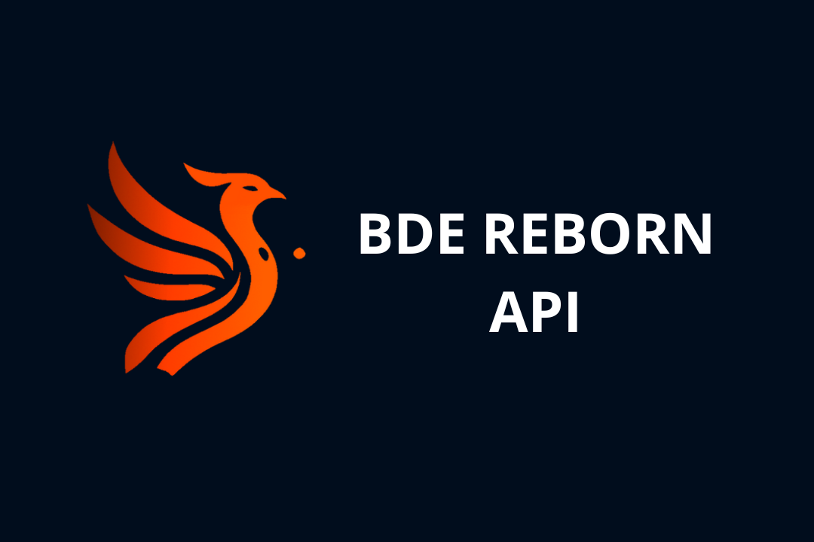
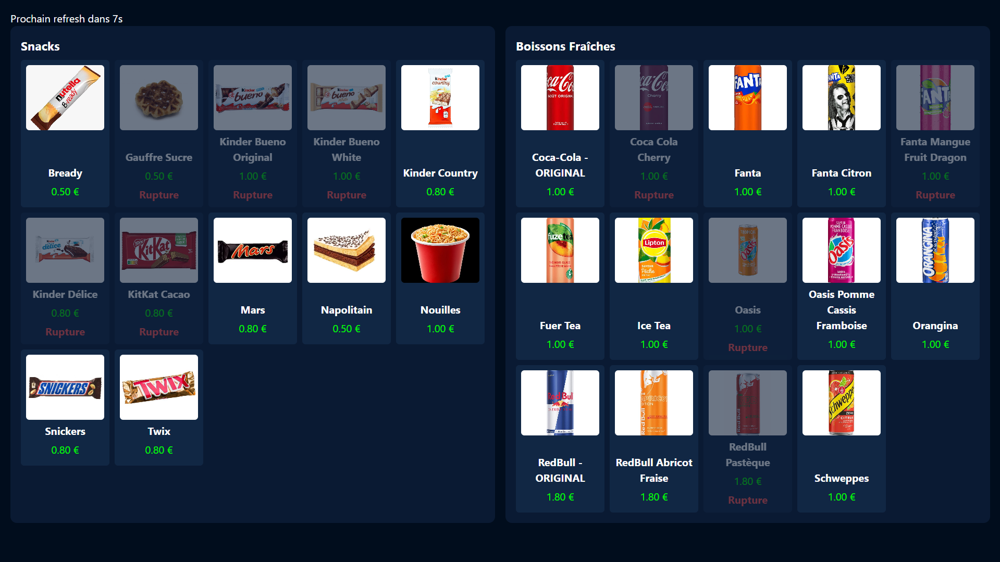

Description :
Reborn API est une API personnalisée conçue à partir d’un travail de reverse engineering sur le système d’inventaire SumUp utilisé par le Bureau des Étudiants. Elle permet d’extraire en temps réel les données de stock et de prix, et de les afficher dynamiquement sur un écran connecté, facilitant la gestion des ventes lors d'événements étudiants.
L’objectif de Reborn API est de rendre plus accessible et automatisée la présentation des produits en vente au sein du BDE. Le système SumUp ne proposant pas de solution publique adaptée, un reverse engineering a permis de créer une passerelle fiable entre l’interface de gestion SumUp et les besoins spécifiques du BDE, tout en assurant la sécurité qui était nécessaire.
